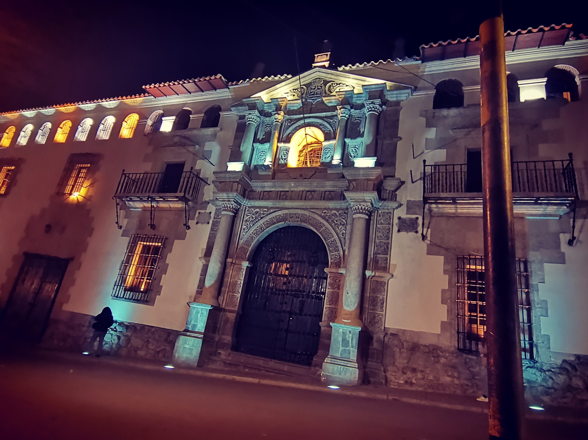
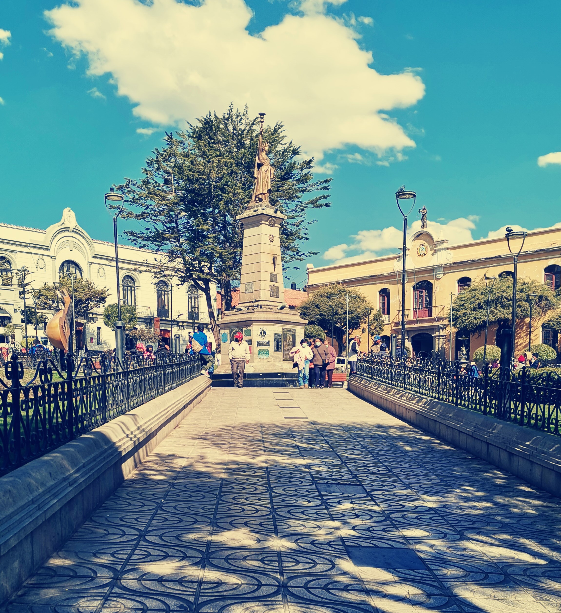
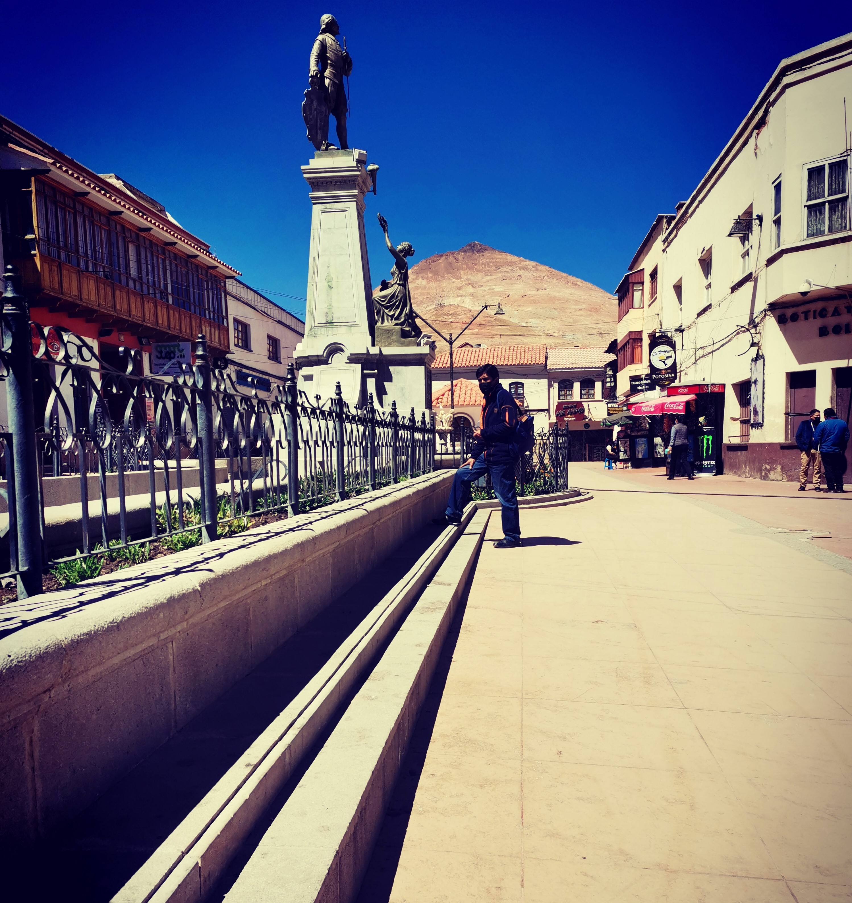
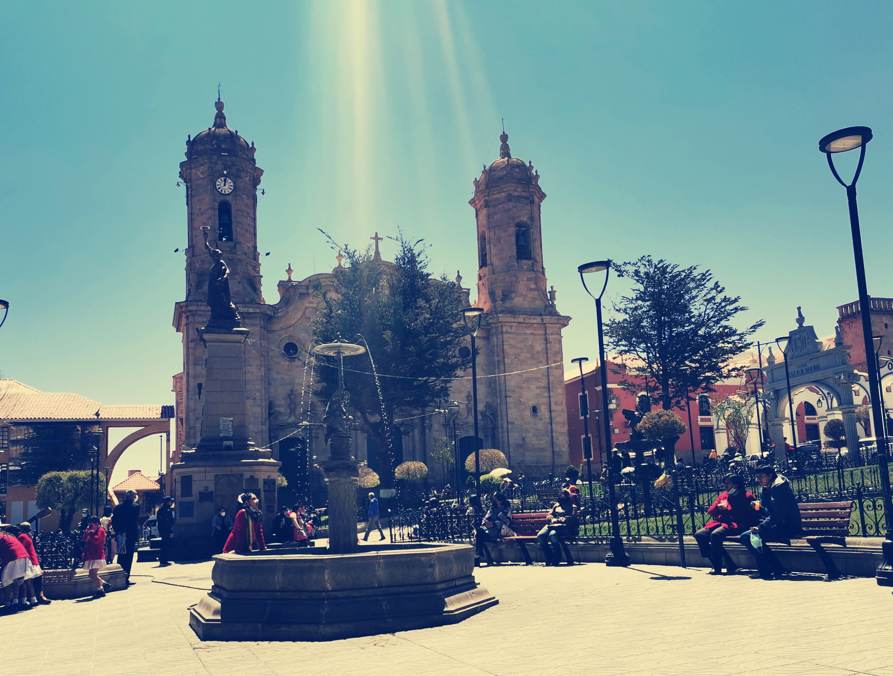

CASA DE LA MONEDA
La Casa Nacional de la Moneda es lugar clave para entender el peso que tuvo la ciudad de Potosí en la historia no sólo de Bolivia, sino del mundo. La primera casa se fundó en el año 1572, pero la fuerte demanda de la Casa Real de España hizo que se quedara pequeña y se contruyera la que conocemos hoy en día. La visita a la casa-museo dura aproximadamente una hora y media, con una guía cronológica en donde se nos explicará las funciones que se llevaban a cabo en cada habitación.
Veremos maquetas, objetos, reliquias, monedas antiguas, y escucharemos un montón de historias con todo tipo de héroes y villanos. Aprenderemos cómo se acuñaron las monedas de plata, primero a pulso, luego con máquinas a vapor y más tarde con maquinaria eléctrica.
Hoy en día sigue habiendo una exclavitud brutal dentro del cerro, con mafias y trato de personas. Hay niños trabajando, y gente con condiciones pésimas. Pero también hay un recorido “guiri” en donde te hacen el show, te visten de minero, y te dejan ver cómo se vive dentro de una mina.
Ver másPLAZA CENTRAL 10 DE NOVIEMBRE

El centro de la ciudad de Potosí, la encontramos muy cerca del resto de lugares turísticos como la Casa Nacional de la Moneda. En el centro destaca una Estatua de la Libertad, al más puro estilo neoyorquino.
A ambos lados de la plaza podemos encontrar el edificio del Ayuntamiento y la Gobernación. Ambos en edificios coloniales, muy característicos de la ciudad de Potosí. Por la mañana se juntan muchos comerciantes en la plaza. Allí podremos aprovechar para recargar energías, probar zumos callejeros, o unas ricas salteñas (tipo empanada boliviana a la que nosotros fuimos adictos).
Ver másCERRO RICO
El lugar por el que Potosí se convirtió en una de las ciudades más grandes y más pobladas del mundo. Cuando llegaron los españoles y vieron que existía un cerro REPLETO de plata la gente se volvió loca. Comenzaron a construir una ciudad alrededor de esta fuente de ingresos, utilizando labor forzosa para vaciar la mina.
Los primeros registros de enfrentamientos por este territorio boliviano datan del siglo XV cuando incas y guaraníes rivalizaban fuertemente. Antes de la colonización inca, los pobladores charcas, chullpas, quechuas y aymaras conocían e incluso trabajaban la plata, sin embargo, fueron los incas los primeros en comercializar la gran riqueza que escondía el cerro Rico.
Ver másCATEDRAL
La catedral es un edificio considerado entre los mas bellos ejemplares de Latinoamerica, de estilo neoclasico con detalles barroco. Construccion iniciada en 1808 (periodo virreinal) com iglesia matriz o tambien llamada Mayor y concluida en 1836 ya en periodo repiublucano.
A partir del año 1924 cambia de nombre ascendiendo a la categoria de Santa Basilica Catedral Santiago Apostol, al crearse el obispado de Potosí
Ver másMUSEO SANTA TERESA
La Iglesia es considerada una de las obras arquitectónicas más hermosas, con un artesonado, un retablo y púlpito que muestra la exquisitez en el estilo barroco; en la misma se puede apreciar retablos y cuadros que corresponden al siglo XVII y XVIII; entre estas resalta: “La Creación”, de Autor Anónimo del siglo XVII. El convento se encuentra perfectamente conservado, observándose el lugar en que muchas jóvenes, vivieron una profunda experiencia de Dios. Presenta una de las mejores colecciones de vestimenta religiosa, hecha con hilos de oro y plata, bordados por las hermanas del convento, obras pictóricas; muebles, libros, reliquias, objetos de plata y otros objetos de arte, capaces de maravillar la imaginación de todo aquel que recorre este Convento – Museo. Las religiosas que actualmente habitan el convento elaboran deliciosos dulces de mazapán, famosos y cotizados desde la colonia hasta nuestros días.
ANTIGUA CALLE DE LA pulmonia
Dando encuentro a la plaza principal de Potosi, se encuentra esta arteria donde la fuente corriente de aire helado que atraviesa, hace que el frio potosino se sienta con mayor intensidad.Por ese motivo tuvo ese dnominativo.
En la calle de la pulmonia se puede apreciar cuadros de las calles potosinas, criptas, etc.